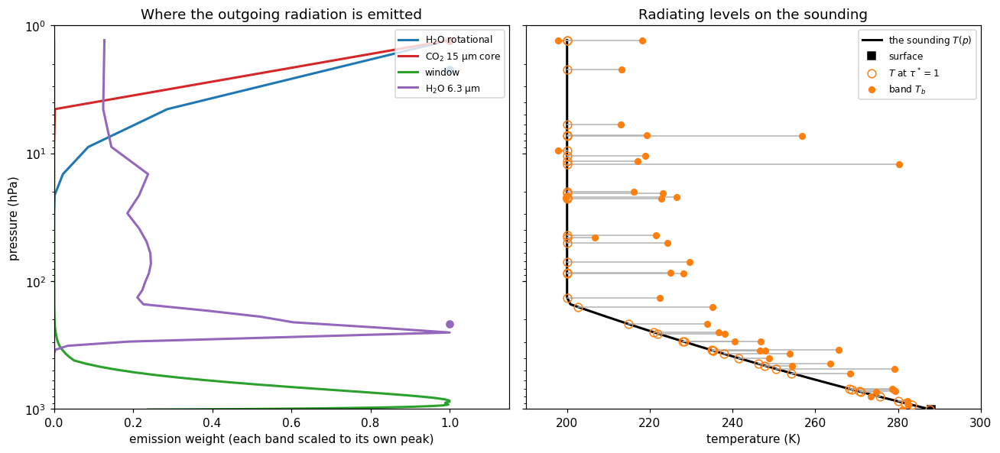

Where photons come from
Chapter 7 builds the weighting function. Going down through the atmosphere there are more molecules to emit, but more absorber above to stop what they emit; going up, less is in the way but there is less and less left to do the emitting. The product of the two peaks somewhere in between, at τ* = 1, and the notes call that the radiating level.
Then the notes add a caveat and move on: for a gray shell with ε ≠ 1 the radiating level “is not defined at all, it’s somewhere in between.”
This page is about that caveat. It is not a gap in the derivation. It is the answer.
Page 2 measured the column optical depth band by band and found five orders of magnitude between the water vapour rotational band and the window. A quantity that varies that much cannot have one radiating level, and the τ* = 1 construction is perfectly happy to tell you so — you just have to run it per band instead of once.
So that is what we do. Same column as pages 1 and 2, same single call to the radiation code, and this time we ask its per-band optical depths where the photons that reach space were actually emitted.
The column, and the weighting function
Two quantities, both straight out of chapter 7 and both in _tour/spectra.py:
tau_star_cumulative(tau_layer, D)— optical depth counted down from space, so it is ~0 at the top and largest at the ground. The diffusivity factorDfrom page 2 is folded in, because what matters is the slant path a photon actually takes.emission_weight(tau_layer, D)— how much of the outgoing radiation each layer supplies. A layer emits a fraction1 − exp(−D τ_k)of a blackbody, and that emission is cut down byexp(−τ*_above)on the way out. Multiply the two and you have the notes’W ∝ τ* e^{−τ*}, written for a discrete grid.
Note what emission_pressure does when the column is transparent: it returns nan rather than a number. Nine of the eleven window bands never reach τ* = 1 anywhere, top to bottom, and neither does the empty 2525–2888 cm⁻¹ stretch page 2 turned up. For those bands there is no radiating level, not even a badly defined one — space sees the ground.
Fifty-six bands, fifty-six answers

This is the figure the cell above produces. Live cells need WebAssembly; if your browser blocks it, the static version is here.
There is no radiating level
Read the left panel first. Four bands, four completely different places.
The dots are the radiating levels — where τ* = 1 — and they are what the numbers below refer to. The CO₂ core, taken at 665–682 cm⁻¹, has its at 1.3 hPa, some 50 km up, well into the stratosphere. The water vapour rotational band at 130–190 cm⁻¹ is close behind at 2.2 hPa. The 6.3 µm water band at 1400–1450 cm⁻¹ comes in at 217 hPa, in the upper troposphere, 40 km lower. And the window band has no dot at all: its weight rises monotonically towards the ground, because the atmosphere never gets in the way, so the “emission” you see is really the surface shining straight through.
Read the curves and you get a second lesson for free. Only the 6.3 µm band has its maximum where you would draw it, at 253 hPa — near its τ* = 1 level but not on it. The other two strong bands never turn over inside the model at all: both are still rising at the top level, 1.3 hPa, because this column’s lid is below the height where their emission would finally thin out. Their radiating level is a real number; their weighting peak is off the top of the domain, and any statement about where they “peak” is a statement about where you stopped the grid.
Those four are a sample, and a mild one. Across the forty-six bands that do have a τ* = 1 level, those levels run from 1.3 hPa to 1005 hPa — a factor of 770 in pressure, which is the whole atmosphere and then the ground. Even within the CO₂ core the four bands 630–700 cm⁻¹ disagree by a factor of 35, from 1.3 to 46 hPa: the phrase “the 15 µm band’s radiating level” is doing the same averaging, one level down, that chapter 5 does across the whole spectrum. Chapter 5’s shell model puts one radiating level somewhere in this range and reports the average. The notes’ phrase, “somewhere in between”, is exactly right; it is just that the thing it is in between is this.
That also answers the puzzle page 2 left you with. If the 15 µm core is opaque at every CO₂ concentration the table can represent, how can adding CO₂ change the OLR? Because opaque bands still emit — from wherever τ* = 1 happens to fall. Adding CO₂ does not open or close that band; it moves its radiating level up, into colder air, and colder air emits less. The band’s optical depth being enormous is not an obstacle to that mechanism. It is the mechanism.
The gap in the right panel is not a rounding error
Now the right panel. Each band contributes two markers at its radiating level: an open one at the air temperature there, and a filled one at the band’s actual brightness temperature. If chapter 7’s picture were the whole story they would sit on top of each other.
They do track: over a spread of 92 K they move together, correlating at 0.87. But forty of the forty-six sit to the right of their open one — the real brightness temperature is warmer than the air at τ* = 1, by 13 K in the rotational band at 130–190 cm⁻¹, by 25 K at 700–725, by 80 K at 2162–2525. The six that go the other way are all small, between 0.3 and 6.6 K, and they turn out to be a separate story; we come back to them. A gap that large is one thing; a gap that is almost never negative is telling you something else, so it is worth chasing.
The τ in longwave_optical_depth_per_band is a band average, and inside one band the absorption is nothing like uniform:
Within a single band the absorption coefficient spans three to ten orders of magnitude. That is not a defect of the table — it is what a real absorption band looks like, a picket fence of strong lines with near-transparent gaps between them, and the whole point of the correlated-k method is to keep that structure instead of averaging it away. The model solves the radiative transfer separately for each of eight g-points and adds up the answers.
The band-mean τ throws it away again. Being an average, it is dominated by the strong lines, so it describes an atmosphere that is opaque everywhere in the band. But the radiation that actually escapes leaves through the gaps, from far lower and far warmer air. Rank the bands by that spread and the 80 K outlier is exactly the band at the top of the list: at 2162–2525 cm⁻¹ the weakest g-point absorbs 3 × 10¹⁰ times less than the strongest, it carries 5% of the band (the outermost Gauss-Legendre weight of eight), and it sees straight to the ground. Run down the other end and you find the CO₂ core, whose four bands are among the narrowest spreads in the table — a few hundred to a few thousand — with gaps within a couple of degrees of zero. They are genuinely saturated at every g-point, so for them the average really is the whole story.
So chapter 7’s radiating level is a monochromatic idea. Apply it to a band and it stops being exact, in a direction you can predict: it places the emission too high, and the wider the band’s spread of absorption, the higher.
Which leaves the six bands that go the other way, and they fall into two groups. Three of them — 750–775, 800–845 and 1130–1155 cm⁻¹ — have levels at 804, 1005 and 931 hPa, at or below the bottom model layer. Take 800–845: its column τ is 0.63, so τ* only just scrapes past 1 right at the ground, and “the radiating level” has degenerated into “the ground”. What space sees there is the surface at 288 K plus a thin veil of colder air above it, which averages 6.6 K below the near-surface air temperature. The other three are the saturated CO₂ core bands, off by 0.3 to 2.2 K in a band whose emission comes from an isothermal 200 K stratosphere, where “the temperature at τ* = 1” is barely a constraint at all.
So the construction fails at both ends: for bands wide in κ because a band is not a wavelength, and for transparent ones because there is no level to find.
In the table above, 2525–2888 cm⁻¹ reports T_b ≈ 290 K, above the 288 K surface. Nothing in the column is that warm; the number is an artifact.
brightness_temperature inverts the Planck function at the band centre, which is only valid if B(ν, T) is nearly linear across the band. Over the other fifty-five bands it is close enough. Over 362 cm⁻¹ of the shortwave tail it is not: the band’s flux comes overwhelmingly from its low-wavenumber end, but we divide it by the full width and invert at 2706 cm⁻¹, where a blackbody emits several times less — so the inversion has to return an impossible temperature to balance. Page 1 shows the same band on the shipped 14-band table, where it is part of a single 1450 cm⁻¹ band and the artifact reaches 300 K.
Worth knowing because it is the general shape of the problem: a band-mean quantity inverted through a nonlinear function is not the same as the mean of the inverted quantity. Page 1’s spectrum has the same caveat at its right-hand edge.
The knob: make it wetter
Scale the humidity and watch the levels move.
At four times the humidity the OLR falls from 247 to 205 W m⁻², and the table shows where the 42 W m⁻² went. The rotational bands’ levels, which spanned 1.3–7.4 hPa, now span 1.3–2.2; the 6.3 µm bands climb from 11–217 hPa to 3–53 hPa. Every water band now emits from higher, colder air, and colder air emits less. The CO₂ core barely moves, from 1.3–46 hPa to 1.3–43: it was never water’s to control.
Then look at the window. At ×1, nine of its bands had no radiating level at all. At ×4 every one of them has acquired one, between 712 and 842 hPa — the count of bands with a level goes from 46 to 55, and all nine new entries are window bands. The window is closing — not because the lines got stronger but because the water vapour continuum, which grows with the square of the vapour amount, has finally made the clear part of the spectrum optically thick.
That is the water vapour feedback in mechanical form: warm the surface, the air holds more vapour, the emission levels rise into colder air, and the planet emits less than the warming alone would suggest. Page 6 puts a number on it — and follows the window closing to the point where it stops being a feedback and becomes a limit.
mid_levels vs interface_levels
This page indexes [-1] for the OLR and [:, 0, 0, :] for optical depth, and those are not arbitrary. A climt state carries two vertical axes.
mid_levels — nz layer centres. Anything that describes a slab of air lives here: temperature, humidity, optical depth, heating rate. tau[k] is the optical depth of layer k, a property of the air between two interfaces.
interface_levels — nz + 1 layer boundaries. Anything that describes transport across a surface lives here: upwelling and downwelling flux. There is one more of them than there are layers, index 0 is the ground and index -1 is the top of the atmosphere. That is why the OLR is values[-1] and not values[0] or values[nz].
The two are related by differencing, and that relation is the energy budget: the heating rate of layer k (a mid-level quantity) is the net flux convergence across its two bounding interfaces (interface quantities). If you ever find yourself wanting to subtract a flux from a temperature, you have crossed the axes.
Both climt and sympl will catch a genuine dims mismatch when you build a state, but nothing will catch you slicing the right array on the wrong axis. Check the shape.
Exercises
Physics
Which band moves most? Set
HUMIDITY_SCALE = 2.0and rank the bands by how far their radiating level moves, measured in log pressure. Ten of them cannot be ranked at all, because at ×1 they had no level to move from. Decide how you would report that — and notice that the choice you make is the difference between “the window barely responds” and “the window responds most of all”. Which is the more honest summary of what happened to the OLR?In kilometres. Convert the radiating levels to heights with a 7.5 km scale height,
z ≈ H ln(p_s / p). Where is the CO₂ core’s? Where is the window’s? Then compute the single “radiating height” the shell model would need to reproduce this column’s 247 W m⁻² OLR, and see which band it lands in.Cool the stratosphere.
lapse_rate_soundingtakesT_strat; drop it from 200 K to 180 K and re-run, comparingupwelling_longwave_flux_in_air_per_bandat the top interface. The OLR barely moves — but the per-band numbers are not all small, and they are not all the same sign. Which band supplies nearly the whole change, and why is it that one? Then explain the bands that went the other way; the sounding’s humidity is the clue, not its temperature.
Code
Extend the table above into a proper diagnostic: for every band, print the radiating pressure, the air temperature there, the brightness temperature, and the gap between them, sorted by gap. Then put the k-spread column next to it. The two should rank together — and where they do not, work out why.
Get the same weighting function out of the model’s own fluxes instead of reconstructing it from τ.
upwelling_longwave_flux_in_air_per_bandlives on interface levels, sonp.diff(..., axis=0)gives you the net upward emission added by each layer — a mid-level quantity withnzentries. Plot it against theemission_weightcurves for the four bands above. Where they disagree, you are looking at the same g-point spread as the k table, measured a different way.
Going deeper
The weighting function came out of the two-stream solution the radiation code is already doing internally, one sweep up and one sweep down. Two-stream radiative transfer derives that solution properly, including what the diffusivity factor D is really approximating and where the approximation costs you.